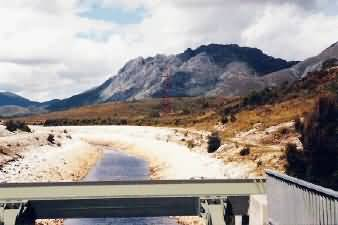
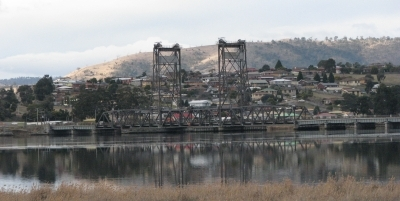
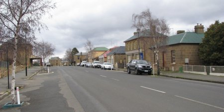
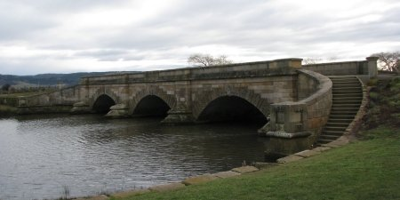

NAVIGATION
TOP of Page
MAIN Page
HOME Page
PREV Page
NEXT Page
ON THIS PAGE
Day Trips West
Hobart to Melton
Melton to Perth
TASMANIAN TOUR
North West
Central North
North East
East Coast
South East
South West
Highlands
West Coast
North Coast
|
Day Trips West of Hobart
Head north out of Hobart along the Brooker and Lyell highways. New Norfolk,
population 6,500, was chosen by Governor Macquarie in 1811 for the Norfolk Island
refugees. St Matthews Church (1823) is Tasmania's oldest. Bush Inn (1825) is the oldest
licensed hotel in Australia. Ride the river in a Jet Boat. Return via the east shore
through Risdon Cove to see the site of the first settlement and the dinosaur
fossils in the road cutting.
Derwent Valley Preservation Society (phone (03)6221-0381 bh or (03)62493-250 ah)
runs train trips 75km into Mt Field National Park. Monthly sunday trips can be
booked through Birch Travel in 45 Victoria Street, Hobart (phone (03)6234-6049 bh or
(03)6223-7264 ah). Fares are adult $26, child $13, family of 4 $70. At the moment X
class Bo-Bo diesels haul three ex TGR 'Tasman Limited' and two ex Emu Bay 'West Coaster'
carriages. Powerful steam locomotive H2 (Mountain 4-8-2 wheel arrangement) will re-enter
service in 1996.
Plenty was the first place in this hemisphere to raise salmon. The ponds date from
1864 and are open for public tours. Take the back road to Bushy Park and then head for
Strathgordon. Bushy Park, population 200, is the Hops capital of Australia, with
golden leaved Poplars forming the tall windbreaks. The 100 year old Oast House
(hot air drying barn) still stands. Westerway has cheap petrol.
National Park is the entrance to Mt Field National Park. A Trout Farm is
adjacent and Russell Falls is on a hiking trail 20 minutes away. Maydena
is the logging town for Australian Pulp and Paper Mills. The 84km Gordon River Road travels
through temperate eucalypt forest and climbs the Humboldt Range (650m).
Turn off at Frodshams Pass down a road leading south to the Scotts Peak Dam
on Lake Pedder. Continue along the Gordon River Road, through McPartlan Pass with
views of Lake Gordon and then Lake Pedder, to the HEC town of Strathgordon.
Just beyond town is the terrific curved concrete wall of Serpentine Dam (140m) and the
underground Gordon Power Station, producing 20% of Tasmania's electricity.

McPartlan Pass Canal and Sluice Gate
TOP
MAIN
HOME
PREV
NEXT
From Hobart to Melton Mobray
The distance is approx 135km over the Lake and Midland highways. The scenery is dry and
surprisingly reminiscent of the New England area of New South Wales around Tamworth.
Many of the place names are from the Bible and the Arabian Nights, books carried by soldier
/explorer Hugh Germain on his hunting trips for food. Granton, population
3,000, has a 1.3km convict built Causeway (1830). The Watch House (1838) with
its 2m by 50cm square cells, is now part of the Petrol Station/Store.
If you like fishing stop and buy a license and bait, as trout like to be fed. The steam
locomotive in the park is an ex TGR H class. Head north over the bridge. Bridgewater,
population 7,500, is the northern extremity of Hobart suburbs, and has the Gothic style St
Mary's Church. Brighton, population 1,200, was considered by Governor Macquarie as
the site of the future capital, and has been Tasmania's main military centre since 1826.
Head north up the Midland highway.

The lifting road/rail bridge at Bridgewater
Pontville, population 850, on the Jordan river, has a sandstone bridge with piers
dating from 1842. The Row (1824), the white cottages beside the bridge, were
originally the police barracks. The former Post Office dates from 1830. Local quarries
supplied building sandstone across the state. Nearby Mt Dromedary was the hideout
of bushranger Martin Cash, who held up the night coach twice in 1844. Bagdad
has an Italian style Congregational Church, and is the home of childrens author Nan
Chauncey.
Kempton, population 450, is a stopping place and market town from the early days
of the Hobart - Launceston road. Dysart House is a substantial two storey stone
house.The Georgian Wilmot Arms (1850) is open for guests. St Marys Church
dates from 1841. Spring Hill (488m) overlooks the sandstone Lovely Banks
property. The road to it was constructed by Canadian convicts, transported after a little
known rebellion in 1840. Bushranging led to the construction of the 1840 guardhouse.
Tedworth (1831) originally opened as the London Inn.
TOP
MAIN
HOME
PREV
NEXT
From Melton Mobray to Perth
Melton Mobray has a hotel with a license from 1849. Turnoff northeast to
the Midland highway. Jericho has mud walls which are protected sections
of a 1840's convict probation station. Oatlands, population 650, was the
proposed Midlands capital in the 1830's and is full of Georgian buildings. The
oldest is the courthouse (1829) with its central police office and chapel built
by two convicts in irons in four months. Stone Callington Mill (1837)
stands 16m high. Originally wind powered, it now has a 1850's steam engine. Stucco
finished Holyrood House has served as a Grammar school run by a Rev. William
Trollope, a relative of author Anthony Trollope. The White Horse Inn (1853)
and Waverley Cottage have accommodation.

High Street in Oatlands looking South
St Peters Pass has carved animal shapes in the shrubs. Antill Ponds
is a dining spot for the colonial coaches and railway journeys. Tunbridge,
population 250, on the Blackman river, was created in 1809 as the main coach stop
on the 199km Hobart to Launceston run. In the main street is a replica of a 1834
coach. Victoria Inn has the steps used to enter the coaches. The Blind
Chapel has no windows to prevent convict minds from wandering.
Ross, population 500, is on the Macquarie river. Elegant sandstone Ross
Bridge (1836), is Australias third oldest. It is inscribed with Celtic symbols
and images plus the mileages to Launceston and Hobart. The two convict sculptors
are buried with interesting headstones in the old cemetery. The Man-O-Ross Hotel
(1831) has several old signposts, and The Scotch Thistle Inn (1832) has meals.
The Ross Wool and Craft Centre used to house the British Regiment until 1869.

The historic convict built Ross Bridge
Campbell Town, population 1000, is on the Elizabeth river. The sturdy brick
Red Bridge (1838) was built by convicts and has never required repair. The
Grange (1847) was the homestead of William Grange, a scientist with
interests in astronomy and telephony. In 1874 the first telephone call in the
southern hemisphere took place to Launceston. The instruments, designed by Alexander
Graham Bell, are now held in the Queen Victoria Museum.
TOP
MAIN
HOME
PREV
NEXT
|